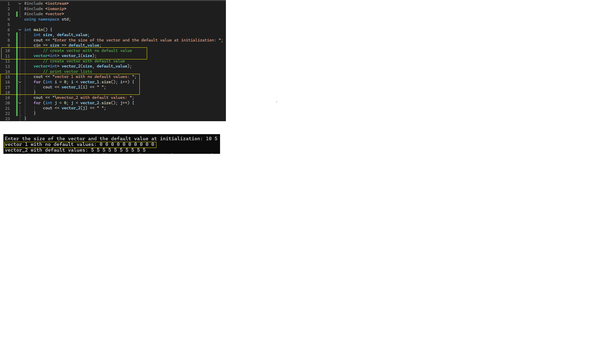
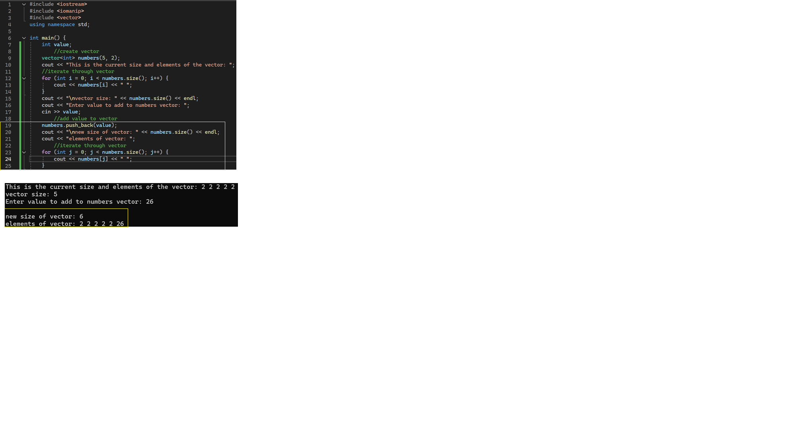
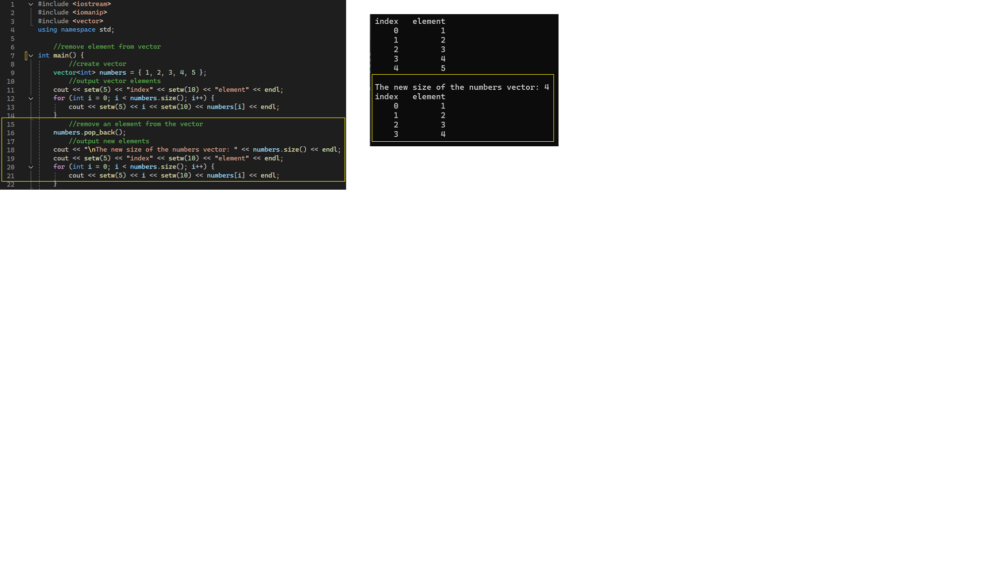

creating an array and access array element

creating an array and access array element
enter elements via looping

Element output realignment

2D array initialization and access

index, post, range based incrementation

vector initialization with and without set value

add elements to vector

removing element(s) from a vector
